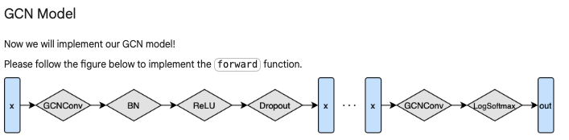
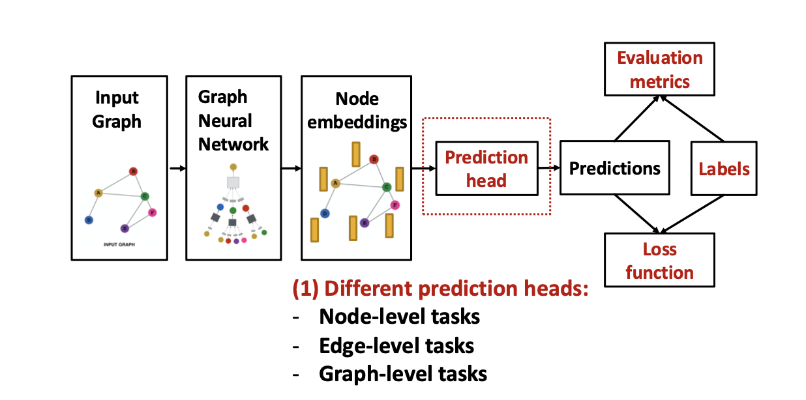
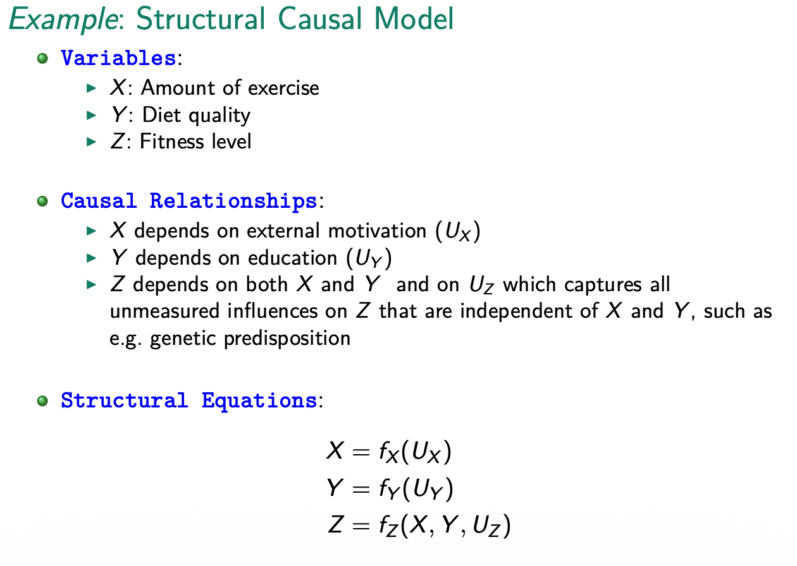
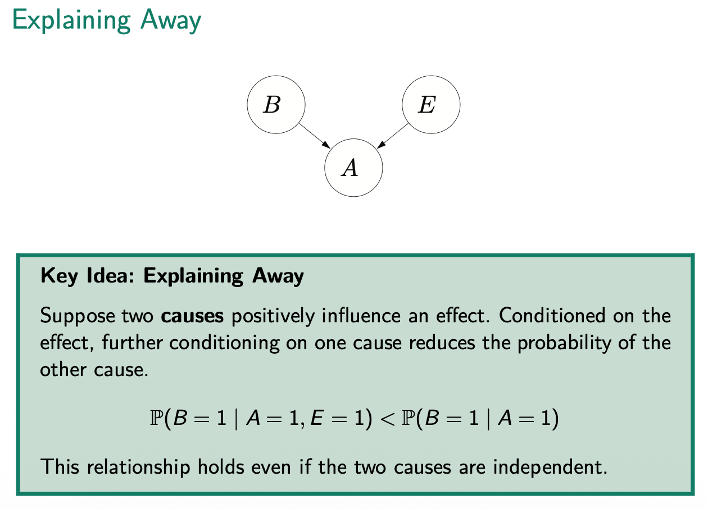

graph NN
Introduction
Real world data is often naturally or ideally structured as graphs. Especially, relational data is modeled better with graph compared to tabular form. GNN extends machine learning model to use graph data format as input. The idea is to learn embeddings of feature vectors that caputres infos about individuals nodes but also how nodes are connected. This leads to richer and more comprehensive understanding of the data. GNN is just UPDATE and AGGREGATE functions
Data characteristics
With ML we can pad images (or center crop) or sequences to have same sized input. With graphs it’s a bit different. They have highly irregular structure.
Multi-relational graphs
There is a distinction between: - undirected - directed - weighted edges - type of edge - one adjacency matrix per edge type
These types of graphs are called multi-relational graphs and is summarized by 1 adjacency tensor A Two important subset are: - heterogeneous - multiplex
coordinate list of edges:
edge_index = torch.Size([2, 156]) tensor([[ 0, 0, 0, 0, 0, 0, 0, 0, 0, 0, 0, 0, 0, 0, 0, 0, 1, 1, 1, 1, 1, 1, 1, 1, 1, 2, 2, 2, 2, 2, 2, 2, 2, 2, 2, 3, 3, 3, 3, 3, 3, 4, 4, 4, 5, 5, 5, 5, 6, 6, 6, 6, 7, 7, 7, 7, 8, 8, 8, 8, 8, 9, 9, 10, 10, 10, 11, 12, 12, 13, 13, 13, 13, 13, 14, 14, 15, 15, 16, 16, 17, 17, 18, 18, 19, 19, 19, 20, 20, 21, 21, 22, 22, 23, 23, 23, 23, 23, 24, 24, 24, 25, 25, 25, 26, 26, 27, 27, 27, 27, 28, 28, 28, 29, 29, 29, 29, 30, 30, 30, 30, 31, 31, 31, 31, 31, 31, 32, 32, 32, 32, 32, 32, 32, 32, 32, 32, 32, 32, 33, 33, 33, 33, 33, 33, 33, 33, 33, 33, 33, 33, 33, 33, 33, 33, 33], [ 1, 2, 3, 4, 5, 6, 7, 8, 10, 11, 12, 13, 17, 19, 21, 31, 0, 2, 3, 7, 13, 17, 19, 21, 30, 0, 1, 3, 7, 8, 9, 13, 27, 28, 32, 0, 1, 2, 7, 12, 13, 0, 6, 10, 0, 6, 10, 16, 0, 4, 5, 16, 0, 1, 2, 3, 0, 2, 30, 32, 33, 2, 33, 0, 4, 5, 0, 0, 3, 0, 1, 2, 3, 33, 32, 33, 32, 33, 5, 6, 0, 1, 32, 33, 0, 1, 33, 32, 33, 0, 1, 32, 33, 25, 27, 29, 32, 33, 25, 27, 31, 23, 24, 31, 29, 33, 2, 23, 24, 33, 2, 31, 33, 23, 26, 32, 33, 1, 8, 32, 33, 0, 24, 25, 28, 32, 33, 2, 8, 14, 15, 18, 20, 22, 23, 29, 30, 31, 33, 8, 9, 13, 14, 15, 18, 19, 20, 22, 23, 26, 27, 28, 29, 30, 31, 32]])
- directed graph can be identifiyed by a Non-symetrical adjacency matrix
Permutation invariance
Traditional data formats = structure of data is fixed and meaningful. With graph there is a lack of natural order and this is refered to as permutation invariance
Embeddings are compact summary of local grpah structure. Thus connected nodes must have similar embeddings.
Graph convolution networks are most wiedely applied arichtecture.
GCN /GNN
- Key idea generate representation of a node that depends on the structure of the graph + any feature information of that node
- CNN aggregates features information from spatially defined patches in an image using convolution operations.
- GCN are similar as they aggregate information based on local graph neighborhoods. The idea is that neighboring nodes have information about a node. Aggregating neigbhoors and node gives enhanced features. This agg needs to be normalized since nodes can have drastic different numbers of neighbors and would bias training.
- In traditional data formats like images and text, the order or structure of the data is fixed and meaningful.
- Changing the order of words will change the meaning of the sentence and modeling results.
- In a graph, nodes (representing entities) are connected by edges (representing relationships), and there is no inherent ordering of these nodes. This lack of a natural order leads to the necessary property of the function to be permutation invariant.
Why not feed each row of concat(adjacency matrix, feature matrix)?:
- it would depend on the arbitrary ordering of nodes that we use in the adjacency matrix
- such a model is not permutation invariant. But it must be permutation invariant.
- Thus, when working with graph data, the model should produce the same output regardless of the order in which the nodes and their neighbors are presented.
- The model must treat these permutations of the input as equivalent.
- Translating nodes (e.g. neighbors) into a vector we have to enforce arbitrary ordering of these nodes. This would produces different outputs in a ML like CNN.
- DEFINING FEATURE OF GNN IS THAT IT USES A FORM OF NEURAL MESSAGE PASSING
Statistics of graph
- average degree of node
- clustering coefficient: how strong nodes tend to from connected groups (i.e., how likely are neighbors of node connected to each other - captures triangles in graph)
- local clustering coefficient (node-level)
- 1 = all neighbors are connected
- 0 none of neighbors are connected
- global clustering coefficent (network-level)
- Average of all local clustering coeffiencts
- local clustering coefficient (node-level)
- Pagereank: importance of a node: out-links are more important
- Importance is calculated as the sum of votes: (importance/out-links) of in-links
- Closeness of node: 1/(sum: shortest path from node to any other node)
- high closeness: efficent spreaders of information
Message Passing Framework
- there a different message-passing iteration
- where a hidden embedding \(h_u^{(k)}\) corresponding to each node \(u \in V\) is updated with information aggregated/convoluted from \(u\)’s graph neighborhood \(N(u)\)
- often two hops away considered.
- happens in the hidden layer
steps:
- It looks at its neighbors
- Mixes their features together
- Applies a learnable weight matrix
- Compresses everything down to 3 numbers (if out_channels = 3)
Self-supervised
This means it only uses graph structure information to train. E.G. negative links.
Understand process
GCN takes two input:
- Node feature matrix X
- [num_nodes, num_dimensions]
- Adjacency matrix A
- which nodes are connected
Message passing:
- happens in layers
- each node sends “message” (its current features) to its neighbors and receives messages from them
Conceptual steps per layer:
- collect messages from neighbors
- Aggregate (combine) them
- Transform with a neural network (weight matrix)
- Apply activation (like ReLU)
How does aggregation work?:
\(H^{(l+1)} = \sigma\!\left(\tilde D^{-1/2}\,\tilde A\,\tilde D^{-1/2}\, H^{(l)} W^{(l)}\right)\)
Step 1:
Normalize adjacency matrix and add degree matrix
Add self-loop (so own information is used in embedding, I = identity matrix): \(\tilde A = A+I\)
Compute Degree matrix: \(\tilde D\)
- each diagonal element = number of neighbors of that node
- next normalize:
\(\hat A = \tilde D^{1/2}\tilde A\tilde D^{-1/2}\)
- this prevents nodes with many neighbors from dominating the aggregation (e.g. weighted averaging of neighbors)
Step2: Message passing via matrix multiplication
if:
- \(H^0 = X\)(initial node features)
- \(W^(0)\) is a learnable weight matrix
then one gcn layer is:
\(H^{(1)} = \sigma(\hat AXW^{(0)})\)
Breaking this down:
- XW = transform node features
- \(\hat A(XW)\) = mix information from neighbors
- \(\sigma (RELU)\) = non-linearity
How does a node in layer 2 get information from 2 hops?
- By aggregating again its neighbors it receives information from 2 hop because neighbors have aggregated information from their neighbors in layer 1 and this is passed to the node in layer 2.
- k iteration = k hops away
Major issue with GCN = over-smoothing
- with 10+ layers all nodes start to look the same because they keep averaging over larger neighborhoods
In GCN layer the two weight matrices are shared for all nodes (parameter matricies: W and B):
- this helps with generalization to unseen nodes
- helps with computation
- model output does not depend on node ordering: GCN is permutation invariant
- a function how to aggregate is learned nothing really tied to a single node
- message passing = local feature-aggregation behaviour (like CNN- convolutional kernels)
basic message passing is defined as:
\(H_u^{(k)} = \sigma(W^{(k)}_{self}h_u^{(k-1)} + W^{(k)}_{neigh} \sum_{v\in N(u)}h_v^{(k-1)}+b^{(k)})\)
where \(W_{self'}^{(k)}, W^{(k)}_{neigh}\in R^{d^{(k)}\times d^{(k-1)}}\) are trainable parameter matricies and \(\sigma\) denotes an elementwise non-linearity (e.g. tanh /ReLU). Bias term \(b^{(k)}\) is omitted for notational simplicity but important for performance.
Process:
- first sum incoming messages from neighbors
- second, combine with previous embedding using linear combination
- third, elemntwise non-linearity
\(h_u^{(k+1)} = UPDATE^{k}(h_u^k,AGGREGATE(h_v^k,\forall v \in N(u)))\)
\(=UPDATE^k(h_u^k,m_{N(u)}^k)\)
UPDATE and AGGREGATE are arbitrary differentiable function (i.e., neural networks) and \(m_{N(u)}\) is the aggregated message.
- At each iteration k of GNN the AGGREGATE function takes as input the set of embeddings of the nodes in \(u's\) graph neighborhood N and generates a message.
- Update combines the message \(m_{N(u)}^k\) with previous emebdinng \(h_u^{(k-1)}\) of node u to generate the updated embedding \(h_u^{k}\)
- Initial embeddings at \(k=0\) are set to the input features for all the nodes: \(h_u^0=x_u \forall u \in V\)
- after all iteration we can use the output of final layer to define the embeddings for each node: \(z_u = h_u^k, \forall u \in V\)
- If no node features are available we can use:
- node statistics (how many neighbors, degree)
- identity features
What information can a node hold?
- structural information = degree of a node
- feature-based
Questions:
- goal embedingt nodes with NN: how many hidden units? as many as nodes?
- why combine messages with previous hidden layer of u?
- at iteration K = 1 we have: \(k-1 = 0\) and this is the features of a node
Loss Function for GNN
GNN most often used for 3 tasks:
- node classification (user is a bot in social network)
- graph classification (proterty prediction based on molecular graph structures)
- relation prediction (content recommendation in online platforms)
\(z_u, z_G\) are embeddings of final layer (node, and graph). Graph embedding happens via pooling. Gradient of the loss is backpropagated through the parameters of the GNN using stochastic gradient descent.
Node Classification
example, for non-binary classification:
- Chose output function
- Softmax
- Sigmoid
- Loss function
- Binary cross-entropy
- Categorical cross-entropy (multiple classes)
- negative log likelihood
\(L = \sum_{u \in N_{train}}-log(softmax(z_u,y_u))\) where \(z_u\) is embedding of node u. Softmax turns real numbers into probabilities (e emphasises larg number), for numeric stable version we can subract max(z) from each z. Commonly neural networks output logits which are then turned into probabilies with softmax or sigmoid function.\(y_u\) is one-hot encodedfi⁄
\(softmax(z_i)= \frac{e^z_i}{\sum_{j=1}^Ke^{z_j}}\)
Softmax with one-hot encoded class labels just selects the probability of correct class:
\(softmax(z_u,y_u) = \sum_{i=1}^cy[i]\frac{exp(z_u^Tw_i)}{\sum_{j=1}^cexp(z_u^Tw_j)}\)
- C = classes
- y one-hot encodede class label
\(sigmoid(z) = \frac{1}{1+e^{-z}}\)
\(Negativeloglikelihood(\theta) = -\sum_{i=1}^nlog \space p(y_i|x_i,\theta)\) which the goal is to minimize: if model assigns high probability to correct outcome then log probablilty is close to 0 low loss. - log goes to + infinity with probability approaching 0.
Three types of nodes
- set of training nodes, \(V_{train}\): These nodes are included in the GNN message passing operations and for computing loss
- Transductive test nodes, \(V_{trans}\): These nodes are unlabeled and not used in loss computation but nodes are still involved in GNN message passing operations. = GNN generates hidden representations for \(h_u^{(k)}\) for the nodes \(u\in V_{trans}\) during message passing operations. But the final layer embeddings of those nodes will not bes used in the loss function computation
- Inductive test nodes, \(V_{ind}\): these nodes are not used in loss computation or message passing during training, meaning these nodes and all their edges are unobserved while training. For example train on subgraph
Semi-supervised: transductive test nodes: included in message passing during trainig
Link prediction
Setup:
- get source and destination node embeddings (set random at start)
- compute pairwise dot products (high = similar)
- applies sigmoid (classifies based on threshold)
- computes binary loss
- prints loss/accuracy
- updates embedding weights
Node properity prediction (classification)

- Weights are shared within GCN Layer but not across layers
- These weights are learned: “learn how to aggregate features of neighbors to optimize loss function”
- Dropout sets certain features of output of layer to zero
- BatchN rescales feature/embedding to more stable range (ca. mean = 0, variance = 1)
- done per feature dimension/ column wise across all nodes since we input a feature matrix
- done per feature dimension/ column wise across all nodes since we input a feature matrix
- Relu sets negative feature/embebeding values to 0
- Input of feedforward function is feature matrix and adjacency matrix
Learned weights:
- Weight matrix in GCN layer
- BatchNorm Parameters: scaling factor, shifting factor that applies after normalization
Graph classification
Same as node classification but loss is computed over \(z_g\) graph level embeddings. Just using the forward passing in a GNN without training weights, we see a strong inductive bias: nodes that are close to each other have a similar embedding.
To train model we need to define:
- criterion = Loss function
- optimizer = e.g. ADAM
- Classifiyer like softmax or sigmoind or linear is already part of feedforwad pass
Steps:
- Forward pass
- Compute loss (based on trainig nodes)
- Derive gradiends
- Update parameters based on gradients (optimizer)
- Calculate Training accuracy (training nodes) /Validation acc (whole graph)
- Repeat for as many epochs as wished
Graph Mini-BAtching
In order to parallelize: we combine graphs into a sinlge disconnected graph data object
- We use global pooling over the nodes to create graph level embeddings that can be used to predict properties of graphs
- we need an index that states which nodes are of which graph
- Since we have adj matrix in message passing, disconnected embeddings don’t influence other embeddings.
- but learned weights (GCN layer weights, batchNorm, etc.) are shared across disconnected graphs
Training and Optimization of GNN
Graph-level implementations
to make calculations more efficient graph level implementation of GNN equations are used.
\(H^k = \sigma(AH^{(k-1)}W^k_{neigh} + H^{(k-1)}W_{self}^k)\) where \(H^k\) is a matrix containing the layer-k embeedings of all nodes in the graph. We compute embedding \(h_u^k\) exatctly once. Limitation one full batch gradient descent and memory problems.
==Subsampling and mini batching==
Parameter Sharing and Regularization
- we can use standard regularization: L2, dropout, layer normalization
some GNN specific regularizations:
- parameter sharing: use same parameters in all aggregate and update functions (most effective for GNN with more than 6 layers)
- Edge dropout: randomly remove (or mask) edgeds in adjacency matrix during training
Computation graph
- node’s neighborhood defines a computation graph
- nodes aggregate information form their neighbors using neural networks
- every node defines a computation graph based on its neighborhood
- so that information of node v doesn’t get lost we include \(h_v^{(l-1)}\)

==Attention scores==
GNN layer in practice
Batch Normalization: stabilizes neural network training
Given a batch of inputs (node embeddings):
for each batch:
- re-center the node emebeddings into zero mean
- re-scale the variance into unit variance
- apply trainable parameters to normalized feature input: \(Y_{i,j} = \gamma X + \beta_\)
Dropout
Prevent overfitting:
- during trainnig with some probability p, randomly set neurons to zero (turn off)
- during testing use all the neurons for computation
- in GNN it is applied in the linear layer in the message function
Training Pipeline

Different Tasks require different prediction heads:
- Node-level prediction: directly make prediction using node embeddings. Classification and Regression
- Edge-level-prediction: prediction using paris of node emebeddings.
- Options are: Concatenation + Linear \(\hat y_{uv} = Linear(Concat(h_u,h_v))\)
- Or: Dot product \(\hat y_{uv} = (h_u)^Th_v\)
- only 1-way prediction (existence of an edge). Can be addapted to k-way prediction using trainable weights for each K
- Graph-level prediction: prediction using all node embeddings
- Options are:
- Global mean pooling, global max pooling, global sum pooling
- Options are:
Unsupervised signals on graphs Page 56
Evaluation metrics
- Root mean square error (RMSE)
- Mean absolute error (MAE)
- Multi-class classification: accuracy (korrekt/total)
- binary classification: accuracy, precision/recall, ROC AUC, F1
Page 66
Data Split
Fixed: split once
- training: optimize GNN parameters
- validation: develop model/hyperparameters
- test: held out, test for final performance
Random: randomly split and report average across multiple random seeds
In graph we have problem that nodes are not independent, how to split?
Solution 1: Transductive setting
- compute embeddings using entire graphs
- train (compute loss) using node labels of 1/3 of nodes
- validation node labels of second third
- tes with last nodes
Solution 2: Inductive setting
- break edges and split into multiple graves
s74
Bayesian Networks and Causal Graphs
- Simple statistics and AI can’t give us answers to causality questions.
- Simposons Paradox is an example where different effects can be found in subpopulation compared to an average effect
- Causal mechanism of the data generating process must be understood
- Common causes (e.g. being a woman has effect on taking the drug and failure to recover) that effects both treatment and outcome is a confounder
- common causes can cause spurious correlation
Causal story behind data
Structural causal model (SCM) - M
- a way of describing relevant features of the world and how they interact with each other
- edogenous: variables determined within the causal system
- part of causal mechanism
- influenced by other variables in the model
- is correlated with unobserved factors that affect outcome
- e.g. education/income
- caused by at least one exogenous variable
- exogenous: variables that determined outside the causal system being modeled
- i.e. not caused by any variable inside the model
- not affected by other variables in the model
- often treated as independent inputs
- help identify causal effects because they provide variation that is not influenced by the outcome
- e.g.: completley randomly assigned scholarships
SCM consists of:
- U: set of exogenous variables
- V: set of endogenous variables
- F: set of functions that assign each variable in V a value based on the values of the other variables in the model

#### Graphical Causal ModelsEvery SCM is assocaited with a graphical causal model, and consists of:
- set of nodes representing variables in U and V
- set of edges representing the functions in f
- edges can be directed vs. undirected
- starting node = parent
- end node = child
- for multiple connection: starting point == ancestor and every node on the path is descendant
- Consequently, every endogenous variable in a model is a descendant of at least one exogenous variable
- exogenous variables cannot be descendants of any other variables (root nodes in a graph).
Graphical definition of causation:
if in graphical model: X is child of Y then Y is direct cause of X. If x is desendant of Y, then Y is potential cause of X. ### DAG: Directed Acyclic Graphs (Bayesian networks)
to be Acyclic:
- no self-lops or cycles
Explaining Away
Suppose we have two causes for an effect the conditional probability of one cause given effect is larger than conditional probaility of other cause given effect and second cause (even if both causes are independant)

- conditioning on A = 1 is crucial for explaining away phenomenonBayesian Network
Let \(X=(X_1,...,X_n)\) be random variables. Bayesian network is a DAG that specifies a joint distribution over X as a product of local conditional distributions:
\(\mathbb{P} = (X_1 =x_1,...X_n=x_n = \prod _{i=1}^np(x_i|x_{Parents(i)})\)
- if no direct connection in a DAG, then they nodes are conditional independent if connecting node is known:
\(T \perp F|V\) which implies \(p(f|v,t) = p(f|v)\)
Causalality in Detail
Conditioning (Seeing) vs. Intervention (Doing) - Pearls Ladder of Causality
- Conditioning: focuses on observed cases where a variable has a certain value (\(P(Y|X=x)\)) - filters data - Intervention: forces a variable to take certain value, \(P(Y|do(X=x)\) alters data-generating process
RCT = doing
with RCT we eliminate the connection between confouder and Treatment variable but the effect of confonder on Y stays Average Treatment Effect:
\(ATE = \mathbb{E}[y|do(X=x_0)] - \mathbb{E}[Y|do(X=x_1)]\)
Causal Conclusions form observational data
Target quantity is causal effect difference or average causal Effect (ACE)
\(ACE = P(Y=1|do(X=1))- P(Y=1|do(X=0))\)